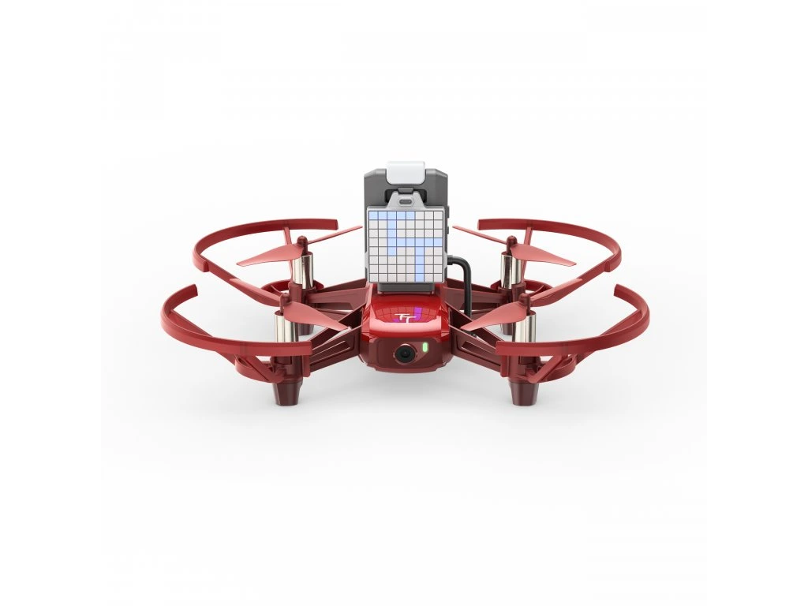
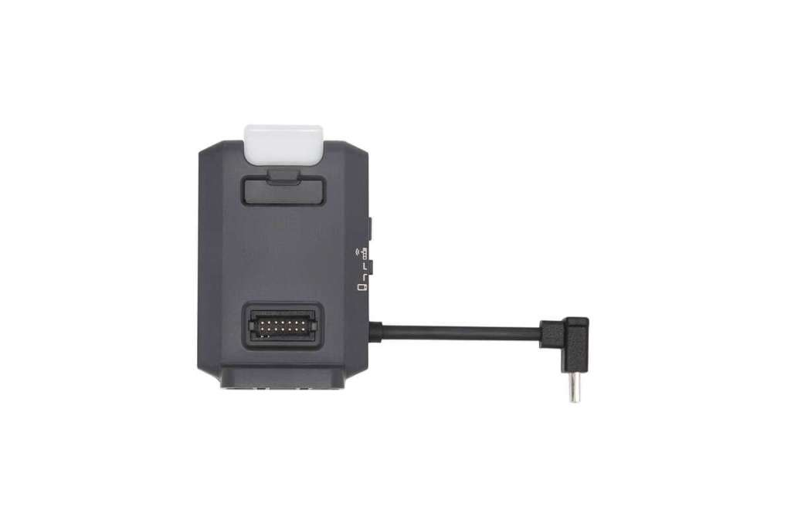
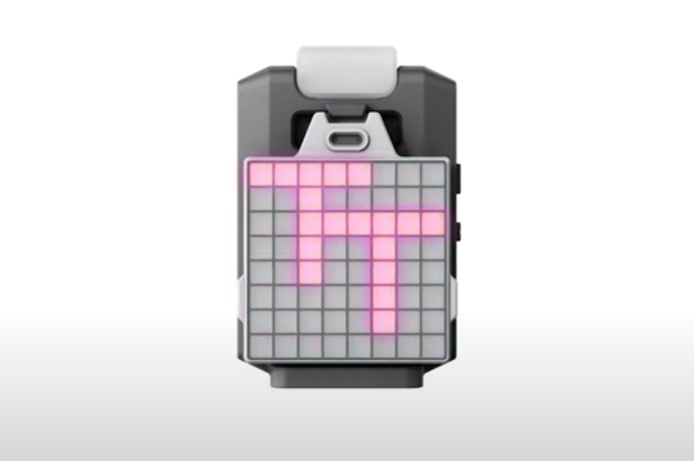
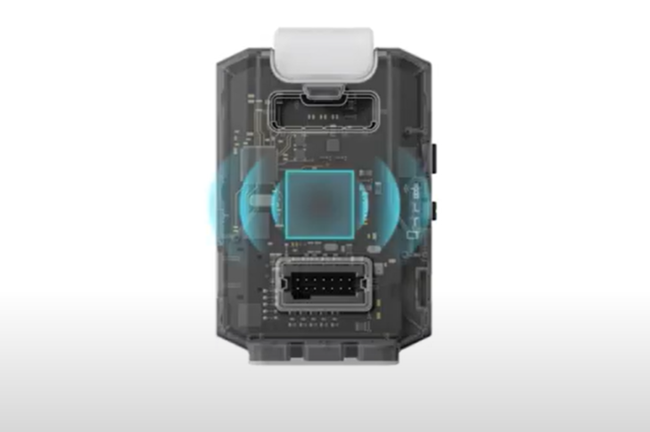
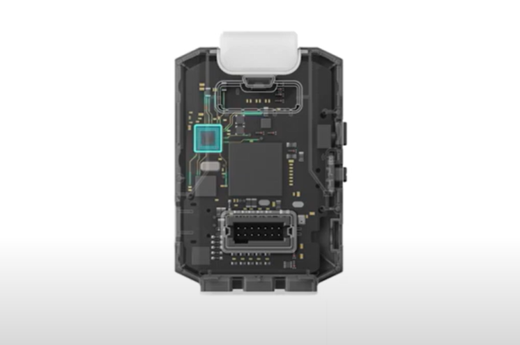
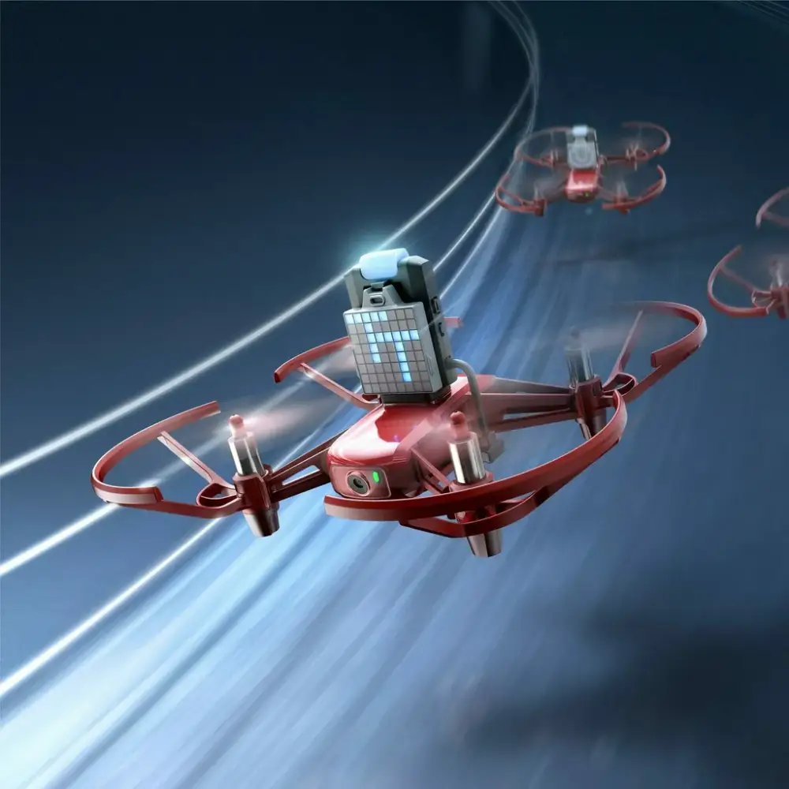
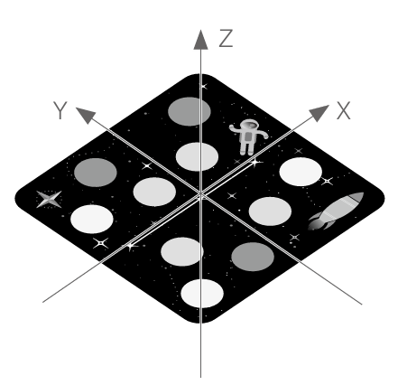
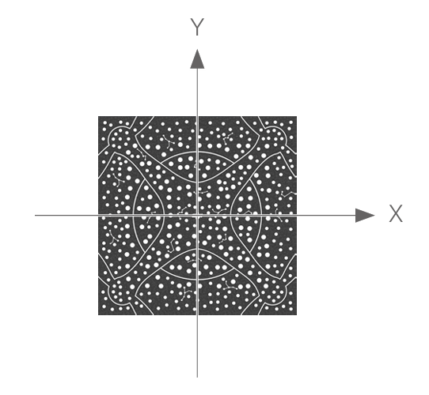

A DJI Tello EDU és a RoboMaster TT a legnépszerűbb oktatási drónok, amelyek kifejezetten a játékos tanuláshoz és a programozás alapjainak elsajátításához készültek. Kompakt méretüknek és biztonságos kialakításuknak köszönhetően akár egy tanteremben is bátran reptethetők, miközben látványos módon teszik érthetővé a technológia működését.












További információkat a drónok reptetéséről és haszálatáról megtalálod az alábbi linkeken:
Tello EDU Felhasználói kézikönyv
Robomaster TT User Manual

A DroneBlocks segítségével egyszerű, vizuális blokkokkal programozhatók a Tello EDU és RoboMaster TT drónok összetett feladatai és szenzorai.
Letöltés
Android: Google Play
iOS: Apple Store
Windows: Microsoft Store

a Tello EDU App egy kifejezetten oktatásra tervezett mobilalkalmazás, amely színes, blokkalapú küldetéseken keresztül vezeti be a felhasználókat a drónprogramozás világába. Fontos tudni, hogy az appot nemrég eltávolították a hivatalos mobil áruházakból, így ha korábban nem töltötted le, ma már csak Windowsra érhető el közvetlen telepítőfájlként.

A Python programozás lényege a Tello esetében nem feltétlenül az AI, hanem az, hogy a blokkok kötöttségei nélkül, szöveges parancsokkal sokkal gyorsabban és pontosabban hajthatsz végre egymás utáni műveleteket. Ez a módszer megtanítja a tiszta kódírást és a hálózati kommunikáció alapjait, miközben teljes kontrollt ad a drón minden mozdulata felett.
Letöltés: weboldalról
(válaszd ki a megfelelő operációs rendszert)
Mielőtt bármilyen speciális parancsot használnál, be kell hívnod a hozzájuk tartozó könyvtárakat. Ezeket a parancsokat minden programunk elején fogjuk használni (kivéve: import random, import math - opcionálisak).

A Tello Mission Pad-ek olyan speciális, vizuális jelzésekkel ellátott kártyák, amelyek segítségével a drón képes pontosan meghatározni a saját pozícióját a térben, és az azokon található egyedi azonosítók alapján előre programozott feladatokat vagy irányváltásokat végrehajtani.
További információkat a Mission Pad-ekről az alábbi linken találsz.

1 - rakéta: a Mission Pad koordináta-rendszerének pozitív x-tengelyét jelöli
2 - ID: a Mission Pad-ek 1-től 8-ig számozottak, így a drón különbséget tud tenni köztük
3 - bolygók: a drón a bolygók elhelyezkedése alapján azonosítja a Mission Pad-et és határozza meg a saját koordinátáit.

A Mission Pad egy háromdimenziós koordináta-rendszert tartalmaz, ahol az origó a lap közepén található, a síkját pedig az x és y tengelyek alkotják. Minden lap saját, független koordináta-rendszerrel rendelkezik, így ezek tetszés szerint kombinálhatók és helyezhetők el, mert nem zavarják egymást.

A repülési térkép mintázata egy háromdimenziós koordináta-rendszert tartalmaz, amelynek középpontjában van a kezdőpont (origó), maga a térkép pedig az x és y tengelyek által meghatározott sík.
A Tello drónraj (drone swarm) lényege, hogy több drónt egyidejűleg, egyetlen központi programmal irányítunk, így azok összehangolt formációkat vagy összetett, közös feladatokat képesek végrehajtani a levegőben.
Drónok csatlkoztatása:
A drónok rajban reptetése előtt át kell kapcsolni a Robomaster TT drónokat single módból a raj módba!

Ezeket a lépéseket akkor fontos megtenned, ha olyan rajt szeretnél irányítani, ahol a drónok mindegyike (vagy legalább egy) más mozgást végez, mint a többi. Érdemes megnézni a videókat (feljebb) és az alábbi programot bemásolnod a kódod elejére.


Drag & Drop Website Builder